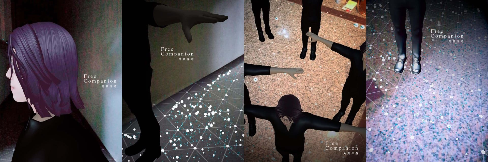

Free Companion
An AR system that summons new friends to accompany your journey.
Unity
ARCore
Augmented Reality
Character Animation
Mobile Interaction
TIME | 2019
AUTHORS | Po-Yao Wu, Tai-Chen Tsai, Hao-Ming Huang
EXHIBITIONS |
- 2019 Nuit Blanche Taipei | Taipei, Taiwan.

MOTIVATION |
Free Companion explores companionship freed from social expectations. It asks: if the “right” companion isn’t available, why should that stop anyone from exploring the world? In this AR playground without judgment or comparison, users meet virtual characters who accompany them through nighttime streets and imagined festivities.
Though their presence is temporary and mediated through a screen, the brief sense of joy and companionship becomes real—highlighting how digital agents can momentarily soften solitude.
APPROACH |
Built with Unity and ARCore, the system generates 3D companions with randomized forms and colors that follow the user’s movement in real time. Character rigging, state machines, and coordinate tracking allow the companions to trail behind the user and accumulate into a playful group. A photo feature lets users capture scenes combining physical surroundings and virtual friends, turning the AR interaction into a sharable memory.